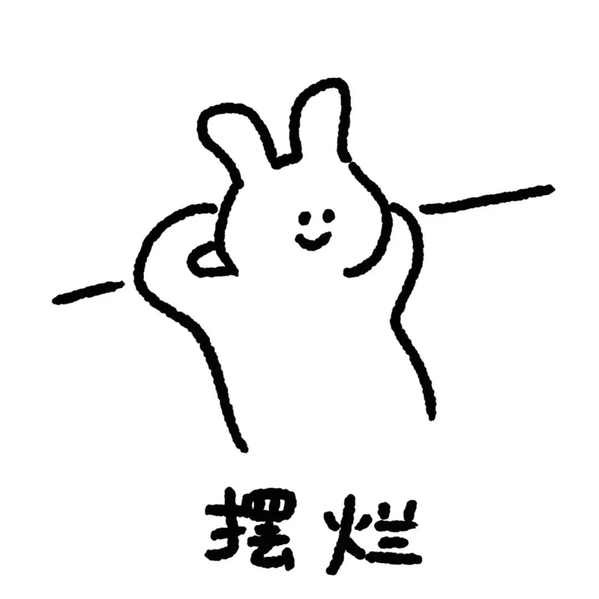
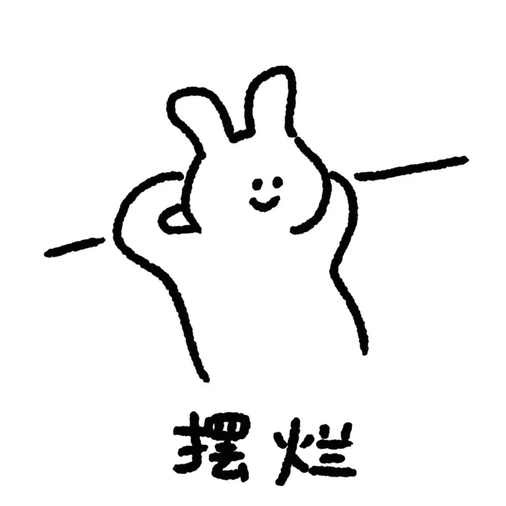
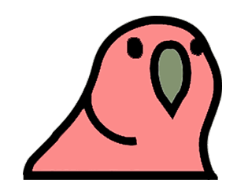
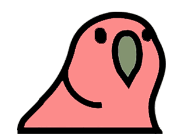

 



2020 年 12 月大学英语四级听力假题
Part Ⅱ Listening Comprehension (25 minutes)
Section A
Directions: In this section, you will hear three news reports. At the end of each news report, you will hear two or three questions. Both the news report and the questions will be spoken only once. After you hear a question. you must choose the best answer from the four choices marked A), B). C) and D). Then mark the corresponding letter on Answer Sheet 1 with a single line through she centre.
Questions 1 and 2 are based on the news report you have just heard.
1.A)A deadly fish has been spotted in the Mediterranean waters.
B) Invasive species are driving away certain native species.
C) The Mediterranean is a natural habitat of Devil Firefish.
D) Many people have been attacked by Devil Firefish.
2.A)It could add to greenhouse emissions.
B) It could disrupt the food chains there.
C) It could pose a threat to other marine species.
D) It could badly pollute the surrounding waters.
Questions 3 and 4 are based on the news report you have just heard.
3.A) cars will not be allowed to enter the city.
B) About half of its city center will be closed to cars.
C) Buses will be the only vehicles allowed on its streets.
D)Pedestrianswillhavefreeaccesstothecity.
4.A)The rising air pollutionin Paris.
B) The worsening global warming.
C The ever-growing cost of petrol.
D) The unbearable traffic noise.
Questions 5 to 7 are based on the news report you have just heard.
5.A) It is a new type of exercise.
B) It is a new way of socializing.
C) It is a new form of entertainment.
D) It is a new way of making money.
6.A) They are mostly young people.
B) They are mostly middle-aged people.
C) They are mostly elderly people.
D) They are mostly children.
7.A) They are not allowed to use their mobile phones.
B) They are not allowed to talk to each other.
C) They are not allowed to leave the room.
D) They are not allowed to take a break.
后续内容需要收费，v我50，谢谢。